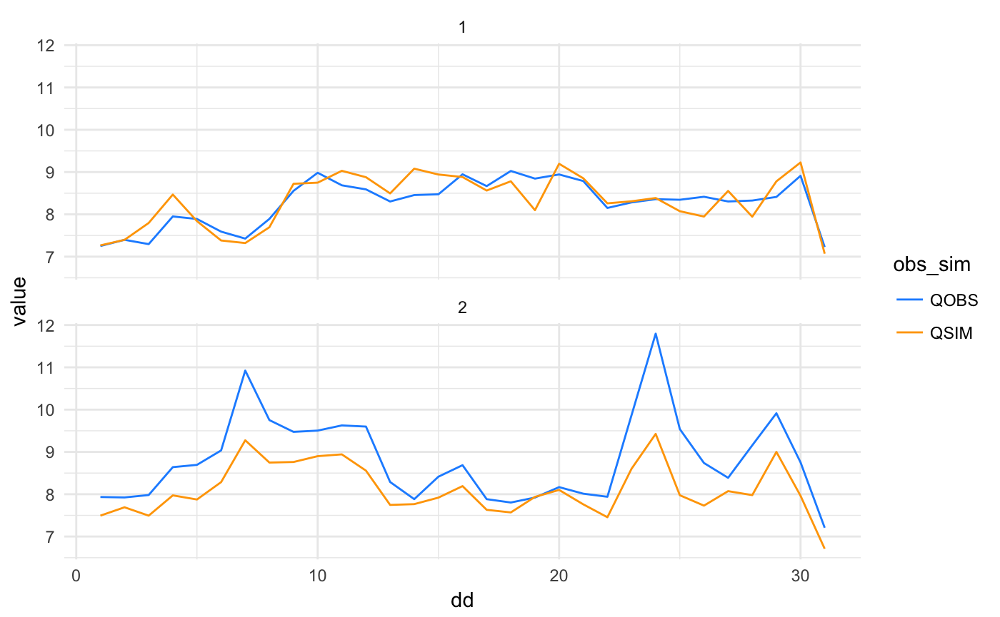
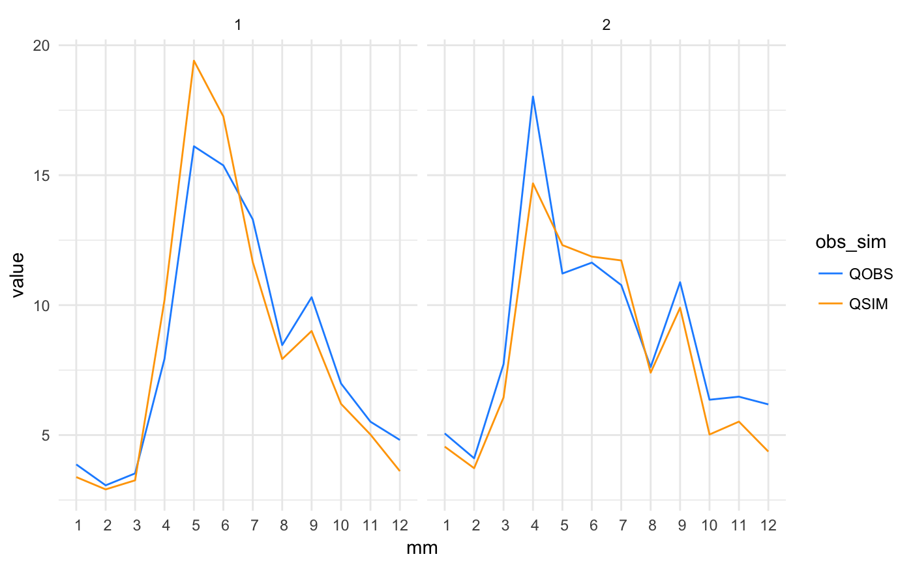
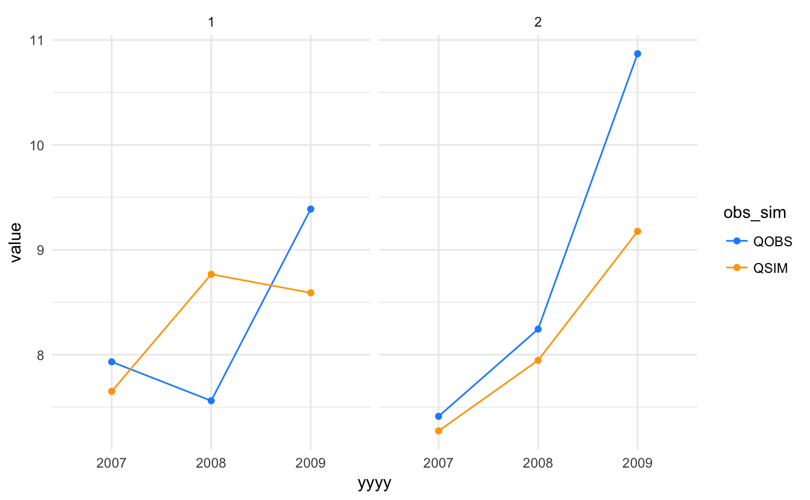
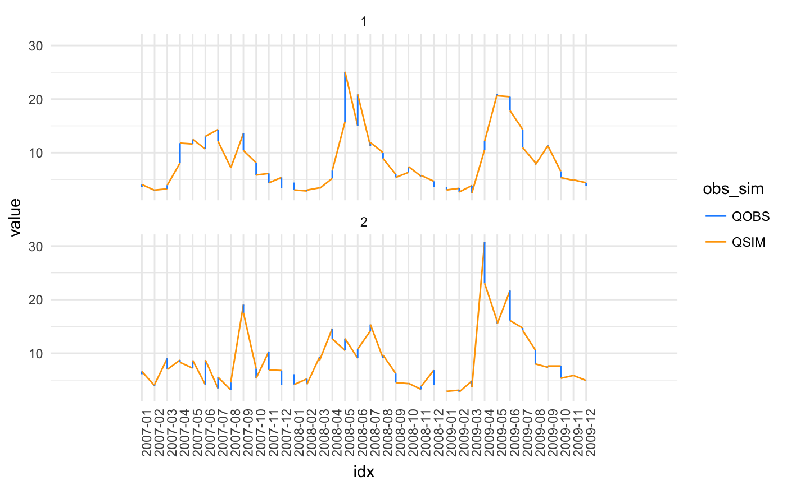

02_time-aggregation.RmdIn hydrology it is often useful to summarize the data respect to a given time dimension. In visCOS this can be done by using the aggregate_time function. The function takes in cosdata and aggregates them according to a chosen time dimension. In the following are some examples of its use:
library(coscos)
library(magrittr)
library(visCOS)## Warning: replacing previous import 'lazyeval::is_formula' by
## 'purrr::is_formula' when loading 'visCOS'## Warning: replacing previous import 'lazyeval::is_atomic' by
## 'purrr::is_atomic' when loading 'visCOS'## Warning: replacing previous import 'magrittr::set_names' by
## 'purrr::set_names' when loading 'visCOS'## Warning: replacing previous import 'dplyr::last' by 'xts::last' when
## loading 'visCOS'## Warning: replacing previous import 'dplyr::first' by 'xts::first' when
## loading 'visCOS'## Warning: replacing previous import 'purrr::set_names' by
## 'magrittr::set_names' when loading 'visCOS'library(ggplot2)
library(dplyr)##
## Attache Paket: 'dplyr'## The following objects are masked from 'package:stats':
##
## filter, lag## The following objects are masked from 'package:base':
##
## intersect, setdiff, setequal, unionlibrary(pasta)Daily runoff aggregation:
cosdata <- coscos::viscos_example()
runoff_aggregate_dd <- aggregate_time(cosdata, "dd") %>%
dplyr::mutate(obs_sim = substr(key,1,4),
basin = substr(key,6,9) %>% as.integer(.))
# plot data:
ggplot(runoff_aggregate_dd) +
geom_line(aes(x = dd, y = value, col = obs_sim)) +
scale_colour_manual(values = c(viscos_options("color_o"),
viscos_options("color_s"))) +
facet_wrap( ~ basin,ncol = 1) +
theme_minimal()
Monthly runoff aggregation:
runoff_aggregate_mm <- aggregate_time(cosdata, "mm") %>%
dplyr::mutate(obs_sim = substr(key,1,4),
basin = substr(key,6,9) %>% as.integer(.))
# plot data:
ggplot(runoff_aggregate_mm) +
geom_line(aes(x = mm, y = value, col = obs_sim)) +
scale_colour_manual(values = c(viscos_options("color_o"),
viscos_options("color_s"))) +
scale_x_discrete(limits = runoff_aggregate_mm$mm) +
facet_wrap( ~ basin) +
theme_minimal()
Yearly runoff aggregation:
runoff_aggregate_yyyy <- aggregate_time(cosdata, "yyyy") %>%
dplyr::mutate(obs_sim = substr(key,1,4),
basin = substr(key,6,9) %>% as.integer(.))
# plot data:
ggplot(runoff_aggregate_yyyy) +
geom_line(aes(x = yyyy, y = value, col = obs_sim)) +
geom_point(aes(x = yyyy, y = value, col = obs_sim)) +
scale_colour_manual(values = c(viscos_options("color_o"),
viscos_options("color_s"))) +
facet_wrap( ~ basin) +
scale_x_discrete(limits = runoff_aggregate_yyyy$yyyy,
labels = abbreviate) +
theme_minimal()
Yearly and monthly runoff aggregation:
runoff_aggregate_yyyymm <- aggregate_time(cosdata, c("yyyy","mm")) %>%
dplyr::mutate(obs_sim = substr(key,1,4),
basin = substr(key,6,9) %>% as.integer(.),
idx = yyyy + mm/12) # a small hack to get a unique identifier
# plot data:
ggplot(runoff_aggregate_yyyymm) +
geom_line(aes(x = idx, y = value, col = obs_sim)) +
scale_colour_manual(values = c(viscos_options("color_o"),
viscos_options("color_s"))) +
scale_x_discrete(limits = runoff_aggregate_yyyymm$idx,
labels = runoff_aggregate_yyyymm$posixdate) +
facet_wrap( ~ basin,ncol = 1) +
theme_minimal() +
theme(axis.text.x = element_text(angle = 90, hjust = 1))